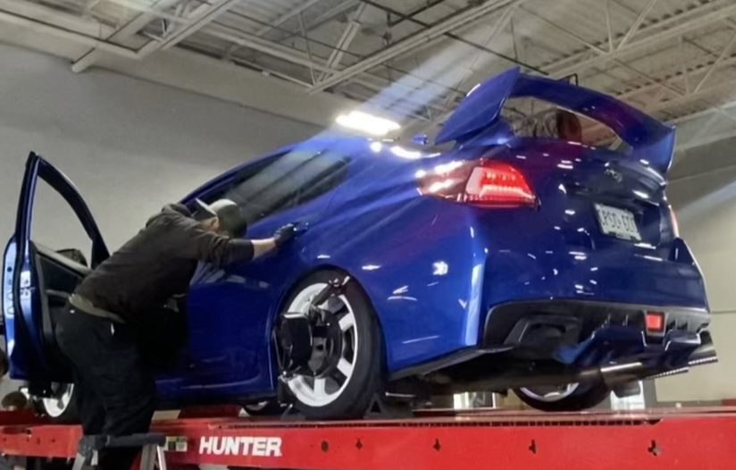
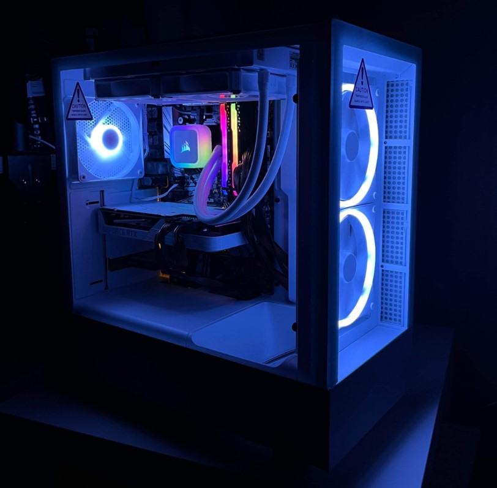
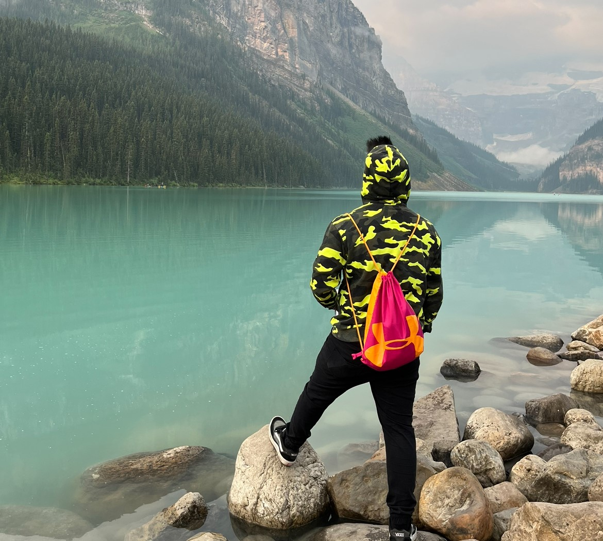

My name is Jan Andrei Carag. I'm 24 years old and I'm currently a student at George Brown College, where I'm aspiring and working hard to excel in the field of Computer Programming and Analysis. I have a strong passion for technology and problem-solving, which drives my interest in programming. I'm constantly learning new skills and technologies to expand my knowledge and enhance my abilities in this ever-evolving field. Outside of academics, I enjoy engaging in personal projects, and exploring new programming languages.
 
I thoroughly enjoy getting my hands dirty, whether it's building computers or working on cars. My fascination with computer hardware ignited at the age of 14 when I built my first computer. This experience fueled my passion for technology, leading me to pursue a computer science program. Throughout high school, I dove into various programming languages, solidifying my decision to pursue a career in this field. As I approached high school graduation, I was determined to expand my knowledge further, which led me to enroll at George Brown College. At the age of 19, I learned automotive mechanics, finding myself drawn to the same tasks my Dad once did to his cars. What makes this journey particularly rewarding is that I am mostly self-taught in both computer building and car maintenance.

Traveling has become an essential part of my life, a passion I never anticipated. It all began with a trip to Quebec City, an experience that transformed my perspective entirely. Before that moment, I never considered myself a "travel person." As a naturally introverted individual, the idea of venturing beyond my comfort zone rarely crossed my mind. However, Quebec City changed everything. Its charm, history, and culture ignited a spark within me, revealing an undiscovered love for exploration. Suddenly, the world seemed vast and full of possibilities. Among the myriad of places I've been fortunate to visit, Lake Louise in Calgary holds a special place in my heart. The sight of the majestic mountains mirrored in the tranquil waters of the lake is simply breathtaking. I vividly remember the overwhelming sense of awe that washed over me upon witnessing this natural wonder for the first time. It was a moment of pure connection with nature, leaving an indelible imprint on my soul.